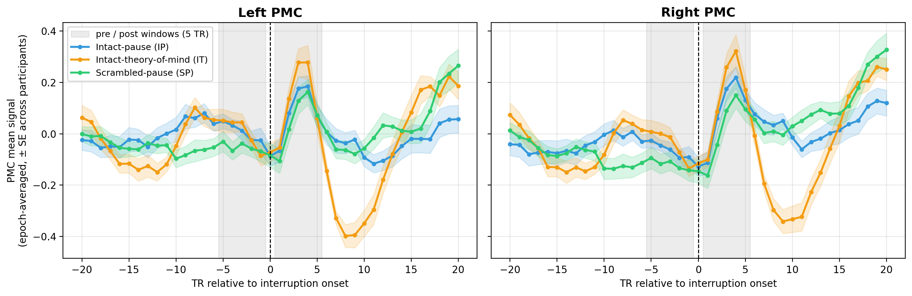

We asked where in the cortex the blood-oxygen-level-dependent (BOLD) signal changes at the moment a story is interrupted, and whether that change differs across the three interrupted conditions. This extends the bilateral-hippocampus onset analysis (Result1_3_hipp-boundary-activity.py) to every cortical parcel of the Schaefer 400-parcel, 17-network atlas (Schaefer et al., 2018). For each parcel and each of the three interrupted conditions (intact-pause, intact-theory-of-mind, and scrambled-pause; the continuous condition has no interruptions and is excluded), every voxel's timecourse was z-scored across the whole run and averaged across the parcel's voxels to give one parcel-mean timecourse per participant. For every interruption epoch the onset response was the mean signal in the 5 repetition times (TRs) immediately after interruption onset minus the mean signal in the 5 TRs immediately before onset, with the onset TR skipped; these were averaged across a participant's epochs to give one onset response per participant. Each parcel was tested with a one-sample two-sided t-test of the participant onset responses against zero, and the resulting p-values were corrected across the 400 parcels with the Benjamini–Hochberg false-discovery rate (FDR) at .05. A positive statistic marks a parcel whose signal rises at the story-to-interruption boundary, the whole-cortex counterpart of the hippocampal boundary response reported in Result 1 (cf. Ben-Yakov & Henson, 2018; Baldassano et al., 2017).
The table below pools the three interrupted conditions. For each condition it reports, per Schaefer-17 network, the number of parcels and how many survive FDR < .05, together with the mean one-sample t among the FDR-significant parcels; the bold row totals the 17 networks. The condition label spans its block of rows. Full per-parcel statistics for each condition are in the linked tables.
Full per-parcel tables — Intact-pause (IP): parcel_onset-response_t_fdr_intact_pause.csv | Intact-theory-of-mind (IT): parcel_onset-response_t_fdr_intact_tom.csv | Scrambled-pause (SP): parcel_onset-response_t_fdr_scram_pause.csv.
| Condition | Network | Parcels (n) | FDR < .05 (n) | FDR < .05 (%) | Mean t (FDR-sig parcels) |
|---|---|---|---|---|---|
| Intact-pause (IP) (n = 19) | VisCent | 24 | 21 | 87.5% | 3.79 |
| VisPeri | 23 | 20 | 87.0% | 4.03 | |
| SomMotA | 39 | 24 | 61.5% | 2.88 | |
| SomMotB | 31 | 17 | 54.8% | -5.27 | |
| DorsAttnA | 27 | 22 | 81.5% | 4.24 | |
| DorsAttnB | 25 | 15 | 60.0% | 3.37 | |
| SalVentAttnA | 34 | 26 | 76.5% | 5.12 | |
| SalVentAttnB | 17 | 17 | 100.0% | 8.06 | |
| LimbicA | 13 | 1 | 7.7% | 2.92 | |
| LimbicB | 11 | 4 | 36.4% | 4.28 | |
| ContA | 24 | 23 | 95.8% | 5.38 | |
| ContB | 25 | 23 | 92.0% | 5.86 | |
| ContC | 12 | 12 | 100.0% | 7.03 | |
| DefaultA | 34 | 20 | 58.8% | 5.46 | |
| DefaultB | 32 | 17 | 53.1% | 2.09 | |
| DefaultC | 13 | 4 | 30.8% | 3.06 | |
| TempPar | 16 | 11 | 68.8% | -4.99 | |
| All 17 networks | 400 | 277 | 69.2% | 3.68 | |
| Intact-theory-of-mind (IT) (n = 19) | VisCent | 24 | 7 | 29.2% | 2.86 |
| VisPeri | 23 | 22 | 95.7% | 3.91 | |
| SomMotA | 39 | 1 | 2.6% | 3.40 | |
| SomMotB | 31 | 8 | 25.8% | 4.49 | |
| DorsAttnA | 27 | 16 | 59.3% | 3.39 | |
| DorsAttnB | 25 | 11 | 44.0% | 3.08 | |
| SalVentAttnA | 34 | 32 | 94.1% | 4.23 | |
| SalVentAttnB | 17 | 17 | 100.0% | 5.84 | |
| LimbicA | 13 | 0 | 0.0% | — | |
| LimbicB | 11 | 4 | 36.4% | 3.08 | |
| ContA | 24 | 23 | 95.8% | 4.40 | |
| ContB | 25 | 19 | 76.0% | 4.50 | |
| ContC | 12 | 11 | 91.7% | 5.50 | |
| DefaultA | 34 | 14 | 41.2% | 3.54 | |
| DefaultB | 32 | 12 | 37.5% | -1.87 | |
| DefaultC | 13 | 1 | 7.7% | 2.63 | |
| TempPar | 16 | 6 | 37.5% | 6.40 | |
| All 17 networks | 400 | 204 | 51.0% | 3.90 | |
| Scrambled-pause (SP) (n = 19) | VisCent | 24 | 0 | 0.0% | — |
| VisPeri | 23 | 7 | 30.4% | 2.96 | |
| SomMotA | 39 | 0 | 0.0% | — | |
| SomMotB | 31 | 25 | 80.6% | -8.91 | |
| DorsAttnA | 27 | 5 | 18.5% | 3.16 | |
| DorsAttnB | 25 | 1 | 4.0% | 3.37 | |
| SalVentAttnA | 34 | 14 | 41.2% | 1.43 | |
| SalVentAttnB | 17 | 16 | 94.1% | 4.49 | |
| LimbicA | 13 | 2 | 15.4% | -3.74 | |
| LimbicB | 11 | 3 | 27.3% | 3.06 | |
| ContA | 24 | 14 | 58.3% | 3.99 | |
| ContB | 25 | 12 | 48.0% | 4.82 | |
| ContC | 12 | 9 | 75.0% | 4.38 | |
| DefaultA | 34 | 11 | 32.4% | 3.80 | |
| DefaultB | 32 | 9 | 28.1% | -3.72 | |
| DefaultC | 13 | 0 | 0.0% | — | |
| TempPar | 16 | 13 | 81.2% | -7.77 | |
| All 17 networks | 400 | 141 | 35.2% | -0.21 |
Whole-cortex interruption-onset response, by condition. Each row is one condition; the four columns are the four cortical views (lateral and medial of the left and right hemispheres) on the Schaefer-400 surface. Every parcel is colored by its one-sample t-statistic of the participant post-minus-pre onset response against zero; bright (yellow) colors mark parcels whose signal falls at the story-to-interruption boundary and dark (purple) colors mark parcels whose signal rises. All three conditions share the color scale (bottom), the perceptually-uniform, colorblind-safe magma map used for the whole-brain cortical maps in Baldassano et al. (2017), applied on a continuous range symmetric about zero (±10 t-units). The posterior-medial cortex (PMC) region of interest is outlined in black on every map. The color is the group-level t-statistic itself; per-parcel uncertainty is summarized by the t and corrected p values in the linked tables.

Interruption-onset signal in the PMC region of interest, by hemisphere and condition. The two columns are the left and right PMC (the Schaefer-400 parcels outlined on the maps above). Each line is the group-mean PMC signal at each repetition time (TR) relative to interruption onset (intact-pause blue, scrambled-pause green, intact-theory-of-mind orange), with the shaded band of the matching color giving ±1 standard error of the mean across participants; the signal is z-scored per voxel over the whole run, pooled across the hemisphere's PMC voxels, and averaged over interruption epochs. The two gray vertical bands mark the 5-TR pre-onset and 5-TR post-onset windows whose difference is the boundary-response statistic mapped above. This is the whole-cortex counterpart, restricted to PMC, of the hippocampal boundary response of Result 1 (Result1_3_hipp-boundary-activity.py).
The line plots above show a rise in the PMC signal just after interruption onset in all three conditions. To test it we took, for each participant, the mean of the five TRs beginning one TR after onset minus the mean of the five TRs ending one TR before onset, averaged over interruption epochs, and pooled the three interrupted cohorts into a single one-sample two-sided t-test against zero. The windows, the pooling and the test are identical to the hippocampal statistic of Result 1.3, so the two numbers are directly comparable.
| Region | n | Mean post − pre | 95% CI | t (df) | p (two-sided) | Cohen’s d |
|---|---|---|---|---|---|---|
| PMC (bilateral) | 57 | 0.1392 | [0.086, 0.192] | 5.26 (56) | < .001 | 0.70 |
Per-participant values are in data/pmc_pooled_per_subject_diffs.csv and the test in data/pmc_pooled_one_sample_t_stats.csv. The hippocampal counterpart is in Result1_3_hipp-boundary-activity/data/pooled_one_sample_t_stats.csv.